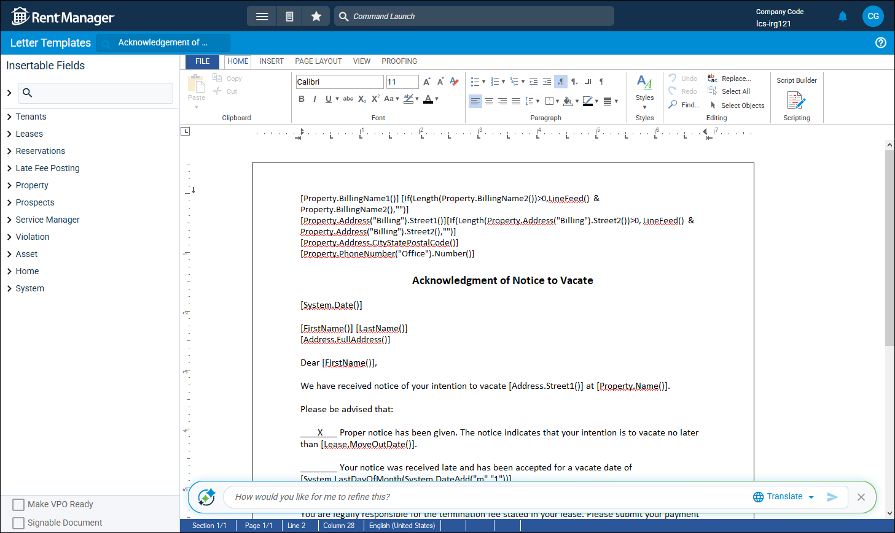
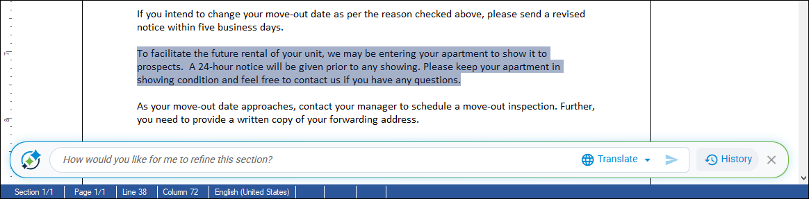

Source: https://rmxhelp.rentmanager.com/Topics/Express/KB/Orion-Writing-Assistant.htm
Writing Assistant Powered by Orion AI
The Orion Writing Assistant—powered by Orion AI—is a helpful tool to help you improve your writing, whether you're composing a professional email, refining your grammar in a letter, or trying to convey a more persuasive tone in your marketing materials.
More Information
This feature is licensed and must be purchased separately. For more information, contact your sales representative at sales@rentmanager.com.
With the Orion Writing Assistant, users simply describe what they want to write—whether that be an email, letter, or marketing description—and Orion AI turns it into clear, well-written text that fits your request. You can then read through the generated message and verify it meets your needs, or add and alter the text quickly to ensure all the necessary details are covered. This saves you time and effort which can then be spent on other tasks and responsibilities.
The Orion Writing Assistant is a versatile tool which can assist with altering your email and letter templates to fit unique individual situations, or to efficiently create repetitive marketing descriptions with slight variations between the properties. In areas of Rent Manager where the feature is available, click the  icon to open the Orion Writing Assistant and start working with Orion AI.
icon to open the Orion Writing Assistant and start working with Orion AI.
Related Privileges
| Group | Privilege | Column |
|---|---|---|
| System | Orion Writing Assistant | Enabled |
For more information, refer to Control User Access.
Letter and Email Templates
You can access the Orion Writing Assistant from the details of a letter/email template to refine the content of the existing template and quickly make your needed edits. You can also use it to write a new letter from scratch, and then modify it as needed. For more information, refer to Letter Template Details (Page).
More Information
After you have made all your changes with Orion Writing Assistant and proof read the letter to make sure it is exactly what you need, you must still save the letter template itself by clicking File arrow_forward Save.

Write a New Template
If you are creating a new email/letter template from scratch, you can use Orion Writing Assistant to get started, saving you time and effort. Tell Orion AI exactly what you want the letter to be about and it generates text that meets your request. The more detail you provide, the more the results reflect your needs.
Once the text is generated, you can read through the content to check for any missing details or to add personalization, further refining the email/letter template to exactly what you need in a fraction of the time it would take to write a letter from scratch. You can make edits manually, or you can use Orion AI to refine the text based on a request such as Make the tone more urgent.
Refine an Existing Template
Orion AI helps you make small and large changes to existing letter/email templates. For example, if you notice that one of your older templates has spaces are missing between punctuation, you can enter a request such as Fix spacing issues. Orion AI goes through the letter and fixes all issues with improper spacing to meet proper grammar standards.
You can also make other requests such as Make the tone more professional or Add a blue header to the table. Whatever changes you need made, you can submit them to Orion AI. Additionally, you can click Translate and select a language from the list. Orion AI then translates the letter into the selected language.
If you wish to make edits to only a specific section of the letter, first type in your request. Then highlight the text you wish to update and click  .
.
More Information
If you wish to discard the changes made by Orion AI or restore the letter to it's original state, you can easily access every version of the letter throughout your changes. Click  History to access the version history and review each iteration. To restore the letter to a prior version, select the iteration from the list and click Restore Version.
History to access the version history and review each iteration. To restore the letter to a prior version, select the iteration from the list and click Restore Version.

Sending Email
When composing a new email to send, including bulk emails, you can use Orion Writing Assistant to generate the body of the email based on a request of what you need. In the Orion AI text bar, enter exactly what you want the email to be about and it generates text that meets your request. The more detail you provide, the more the results reflect your needs. For more information, refer to Send an Email.
Once the text is generated, you can read through the content to check for any missing details or to add personalization, further refining the email message to exactly what you need. You can make edits manually, or you can use Orion AI to refine the text based on a request such as Make the tone more conversational.
More Information
You also have the option to load an email template into your email to generate the main body of your content. You can then use Orion Writing Assistant to alter the content to fit unique situations. For example, you may need to send a standardized email requesting the tenant pay an outstanding balance, but ask Orion AI to make the tone more urgent if the tenant has been delinquent for a long time.
If you wish to make edits to only a specific section of the email, first type in your request. Then highlight the text you wish to update and click  .
.
Marketing Descriptions
When writing up marketing descriptions for your properties or units, you can use the Orion Writing Assistant to quickly generate a description of the property based on the information in Rent Manager. When you open the Orion Writing Assistant, it automatically generates a paragraph of text, which you can then refine to suit your needs. For more information, refer to Property Marketing Setup (Pop-Up).
Once the text is generated, you can read through the content to check for any missing details or to add personalization, further refining the marketing description to exactly what you need. You can make edits manually, or you can use Orion AI to refine the text based on a request such as Make the advertisement flashier.
If you wish to make edits to only a specific section of the description, first type in your request. Then highlight the text you wish to update and click  .
.